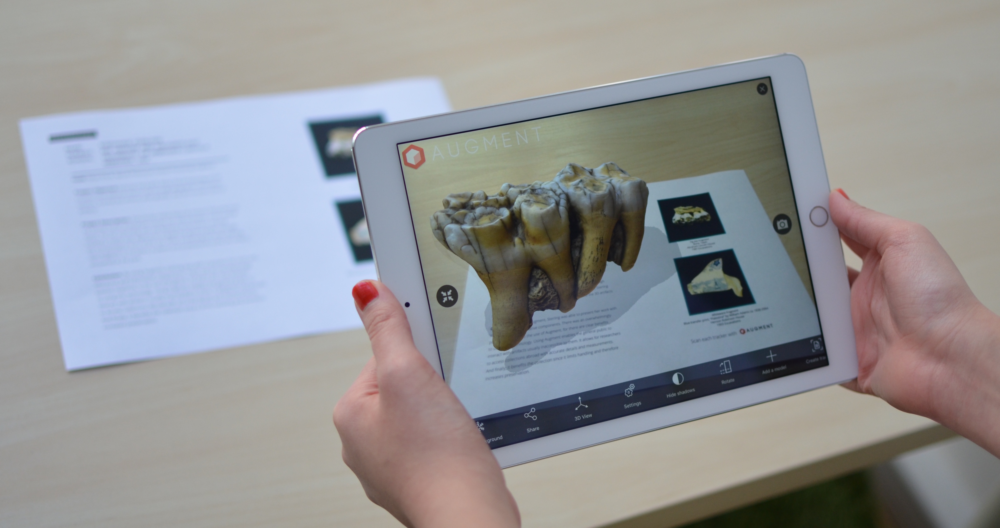
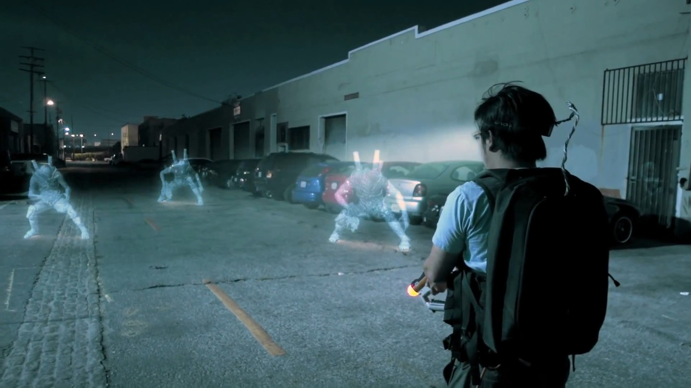
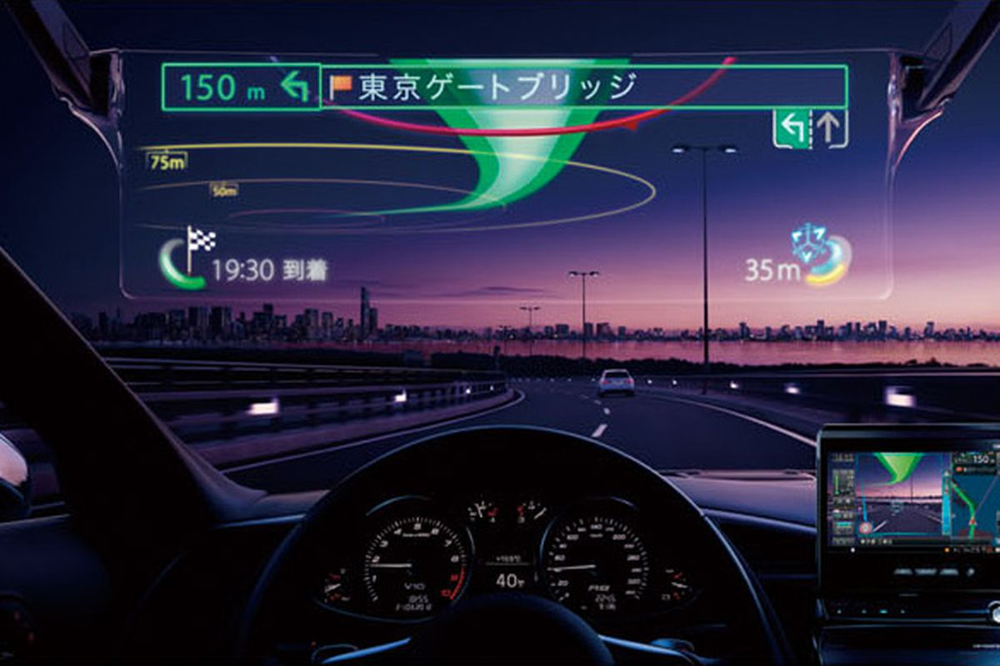

EDUCATION
In educational settings, AR has been used to complement a standard curriculum. Text, graphics, video, and audio were superimposed into a student’s real time environment. Textbooks, flashcards and other educational reading material contained embedded “markers” or triggers that, when scanned by an AR device, produced supplementary information to the student rendered in a multimedia format.
As AR evolved students could participate interactively and students can interact with knowledge more authentically. Instead of remaining passive recipients, students would become active learners, able to interact with their learning environment. Computer-generated simulations of historical events, exploring and learning details of each significant area of the event site could come alive.
Augmented reality technology enhanced remote collaboration, allowing students and instructors in different locales to interact by sharing a common virtual learning environment populated by virtual objects and learning materials.
AR would also be a way for parents and teachers to achieve their goals for modern education, which are for example to provide a more individualized and flexible learning, making closer connections between what is taught at school and the real world and helping students to become more engaged in their own learning.

VIDEO GAMES
The gaming industry embraced AR technology. A number of games were developed for prepared indoor environments, such as AR air hockey, Titans of Space, collaborative combat against virtual enemies, and AR-enhanced pool table games.
Augmented reality allowed video game players to experience digital game play in a real world environment. Companies and platforms like Niantic and LyteShot emerged as major augmented reality gaming creators. Niantic is notable for releasing the record-breaking Pokémon Go game. Disney has partnered with Lenovo to create the Augmented Reality game 'Star Wars: Jedi Challenges' that works with a Lenovo Mirage AR headset, a tracking sensor and a Lightsaber controller that will launch in December 2017.
MEDICAL
Since 2005, a device that films subcutaneous veins, processes and projects the image of the veins onto the skin has been used to locate veins. This device is called a near-infrared vein finder.
AR provided surgeons with patient monitoring data in the style of a fighter pilot's heads up display or allowed patient imaging records, including functional videos, to be accessed and overlaid. Examples include a virtual X-ray view based on prior tomography or on real time images from ultrasound and confocal microscopy probes, visualizing the position of a tumor in the video of an endoscope, or radiation exposure risks from X-ray imaging devices. AR can enhance viewing a fetus inside a mother's womb. Siemens, Karl Storz and IRCAD have developed a system for laparoscopic liver surgery that uses AR to view sub-surface tumors and vessels. AR has been used for cockroach phobia treatment. Patients wearing augmented reality glasses can be reminded to take medications.

NAVIGATION
The NASA X-38 was flown using a Hybrid Synthetic Vision system that overlaid map data on video to provide enhanced navigation for the spacecraft during flight tests from 1998 to 2002. It used the LandForm software and was useful for times of limited visibility, including an instance when the video camera window frosted over leaving astronauts to rely on the map overlays. The LandForm software was also test flown at the Army Yuma Proving Ground in 1999. In the photo at right one can see the map markers indicating runways, air traffic control tower, taxiways, and hangars overlaid on the video.
AR can augment the effectiveness of navigation devices. Information can be displayed on an automobile's windshield indicating destination directions and meter, weather, terrain, road conditions and traffic information as well as alerts to potential hazards in their path. Aboard maritime vessels, AR can allow bridge watch-standers to continuously monitor important information such as a ship's heading and speed while moving throughout the bridge or performing other tasks.